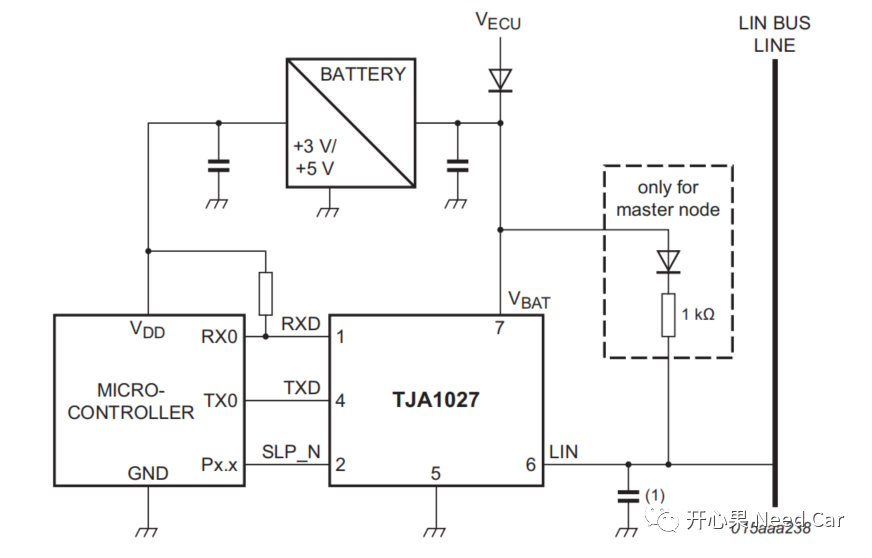
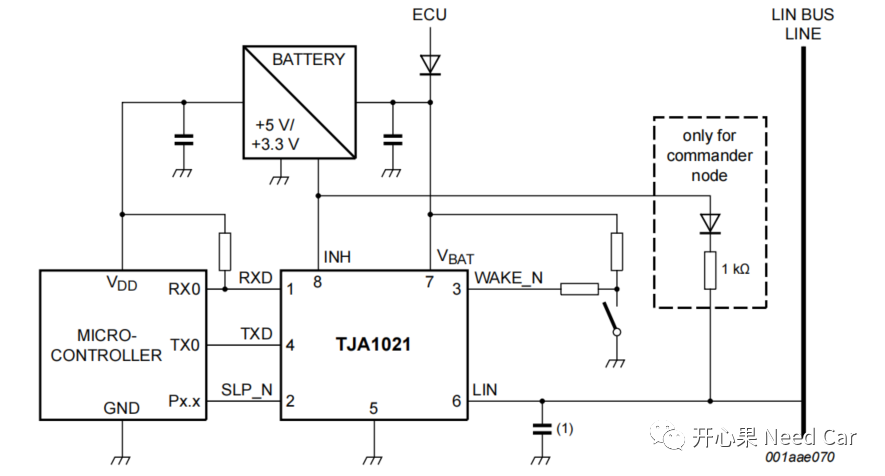
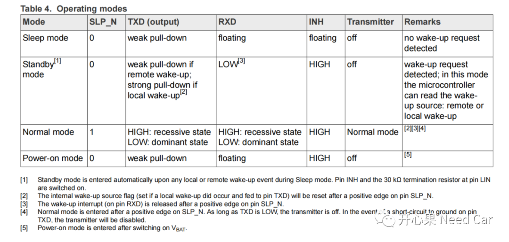
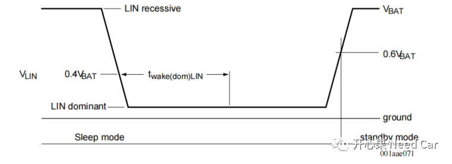
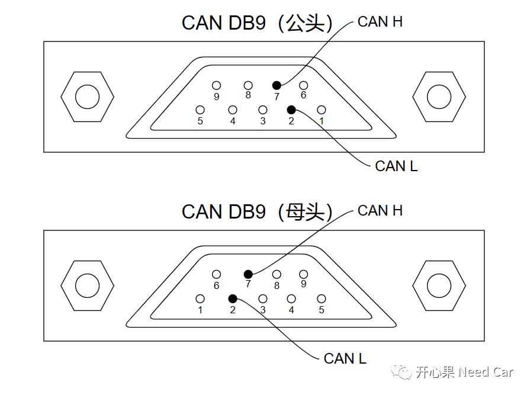
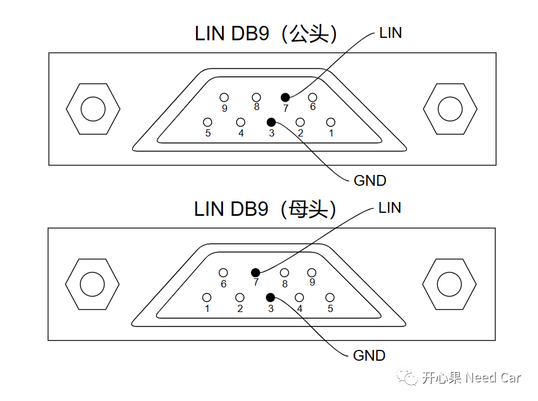

开心果 Need Car · 2023-04-23T09:58:00+08:00 · 微信原文
汽车智能化的发展，更高带宽、更高速率的总线在不断增加比重。但是，成本依然是一个不可忽视的角色，比如：车窗、门锁、座椅等使用场景，没有必要为了速度而使用高成本的CAN、Ethernet等总线，低成本的Lin总线即可满足需求。本文，从Lin Transceiver（简写Trcv）视角聊聊Lin总线。
1、Lin Trcv的PCB布局
Lin（Local Interconnect Network）总线与CAN总线一样，串行通信。与CAN总线不同的是：Lin总线单线传输信号，而CAN总线使用双绞线，利用差分电压传输信号。
具体项目中的Lin Trcv PCB布局，与选用的型号和设计相关，各家产品设计会有所差别。本文，讨论两款Lin Trcv：TJA1021、TJA1027。
（一）TJA1027
TJA1027与uC、Battery的一般布局关系，示意如下：

如上图，Lin Module的数字信号通过RXD、TXD与TJA1027交互，之后TJA1027将数字信号转换成模拟信号发送到Lin BUS。数字信号中，数字1表示隐性（recessive）、数字0表示显性（dominant）。不同节点之间无法通过数字信号交互，需要通过Trcv进行数/模转换。在Lin总线中，用12V模拟隐性，0V模拟显性，即：上图中的LIN Pin（对应6 Pin脚）在Lin Bus中，通过传输12V、0V电压将信息发送到目标节点。
Lin总线中，有一个Pin常连Battery（上图中的第7 Pin），用于监控总线唤醒事件。
（二）TJA1021
TJA1021与uC、Battery的一般布局关系，示意如下：

与TJA1027不同，TJA1021有INH Pin，这也意味着此类型的Lin Trcv可以唤醒uC（TJA1027不能唤醒uC），因为INH的使能会激活SBC给uC输出工作电压，进而激活uC，之后uC控制Lin Trcv的工作状态。
TJA1021具有WAKE_N Pin，也就意味着：TJA1021具有本地唤醒功能，这是TJA1027所没有的。
2、操作模式
不同的Lin Trcv，对应的操作模式会有所不同，本文着重讨论TJA1021的操作模式（Operating modes）。TJA1021操作模式包括：Normal mode、Power-on mode、Sleep mode、Standby mode。对于这些模式的理解，可以通过下图理解：

信息解读：
INH Pin只有在Sleep Mode下，处于悬空状态（floating），其余模式处于HIGH状态（12V）。在uC唤醒阶段，可以通过检测INH状态知道是哪个Trcv触发唤醒。唤醒源的检测，在之前的文章就讨论过，可以参考前文《嵌入式开发：如何识别PowerOn唤醒和总线唤醒》；
如果有本地或者远程唤醒事件，Trcv自动进入Standby Mode，同时，RXD由悬空状态切换为LOW状态，此时，可以通过TXD判断唤醒原因。如果设计中，没有使用本地唤醒，RXD的拉低可以看作远程唤醒，即：Lin Bus唤醒；
只有Lin Trcv进入Normal mode，Lin数据方可收/发；
只有Lin Trcv进入Normal mode，SLP_N Pin拉高。
3、Wake-up
本文讨论TJA1021的唤醒方式。TJA1021在Sleep Mode下，有三种唤醒方式。
（一）远程唤醒（Remote wake-up）
远程唤醒也就是总线唤醒，总线唤醒如下所示：

总线唤醒需要满足如下条件：LIN Pin拉低时间＞twake(dom)LIN，之后，LIN Pin由低拉高。
（二）模式切换唤醒
场景：下电流程中，上层需要重新唤醒Lin通信，此时，uC依然供电，uC可以通过控制SLP_N Pin，使Lin Trcv进入Normal mode，继续保持工作。
（三）本地唤醒
也就是WAKE_N使能，如果设计中，使用WAKE_N，eg：WAKE_N与KL15连接，Lin Trcv可以本地唤醒。
4、CAN/LIN DB9接线


往期精彩回顾
Bootloader开发：为什么需要SBL（Secondary Bootloader）?
Autosar EcuM：APP由RUN到POST_RUN浅析